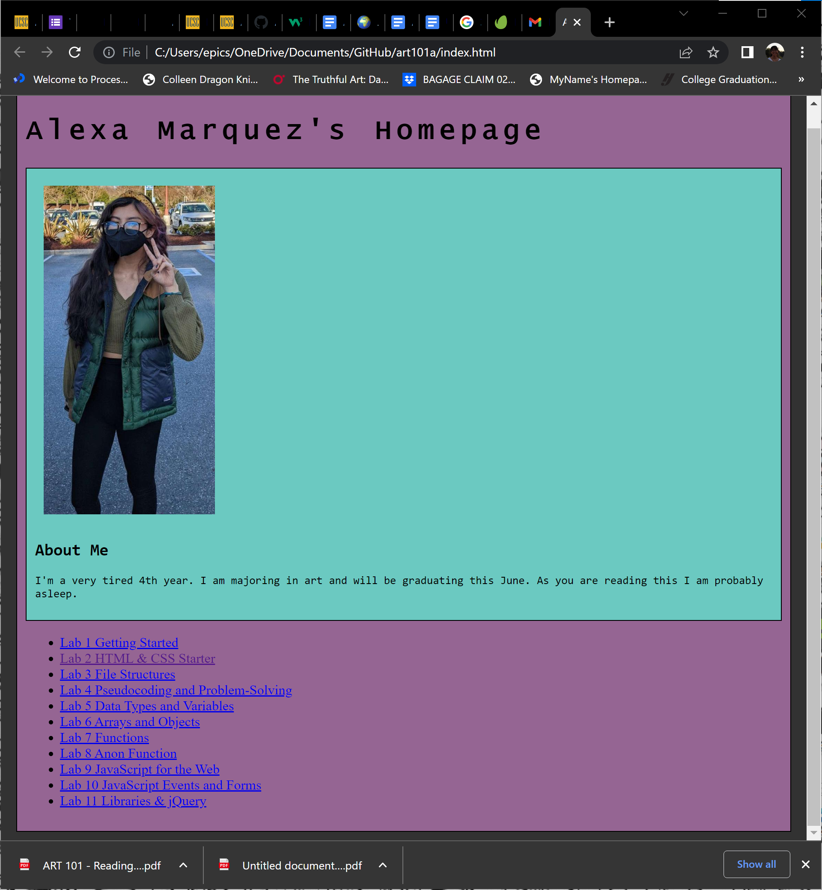
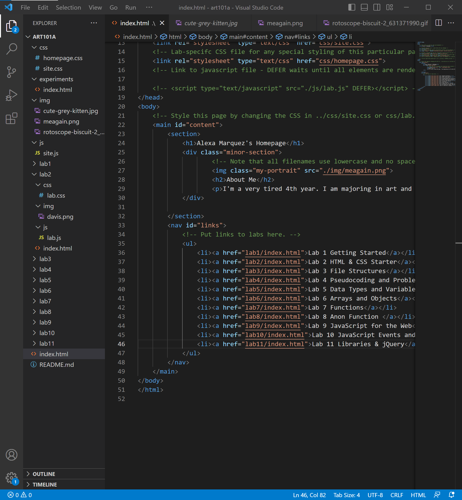
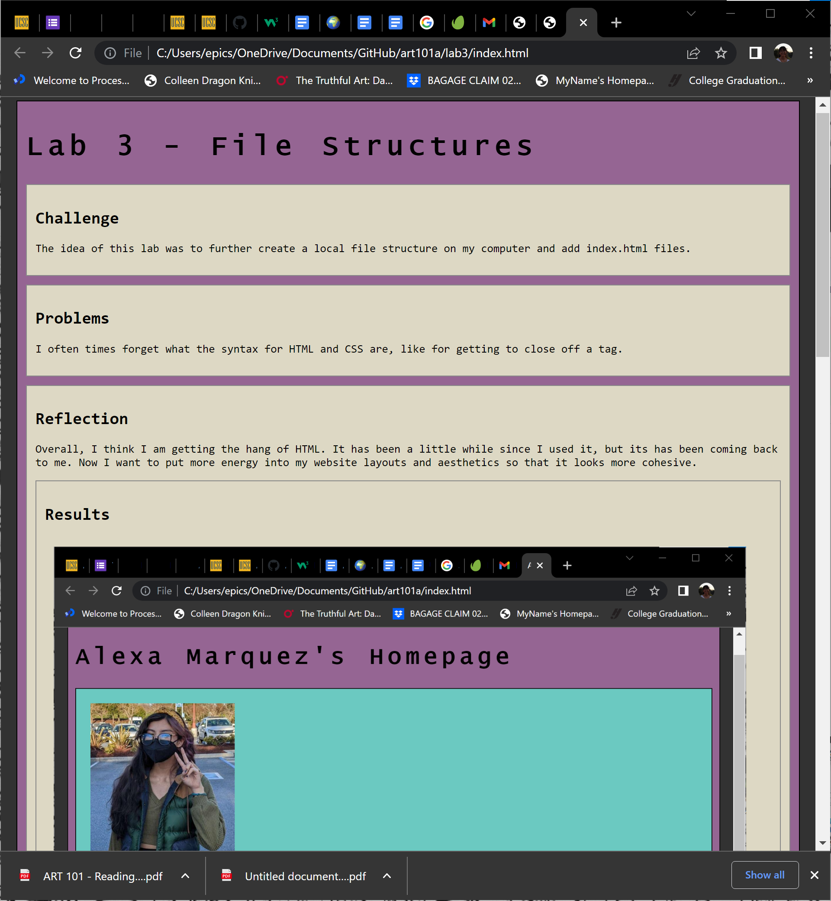
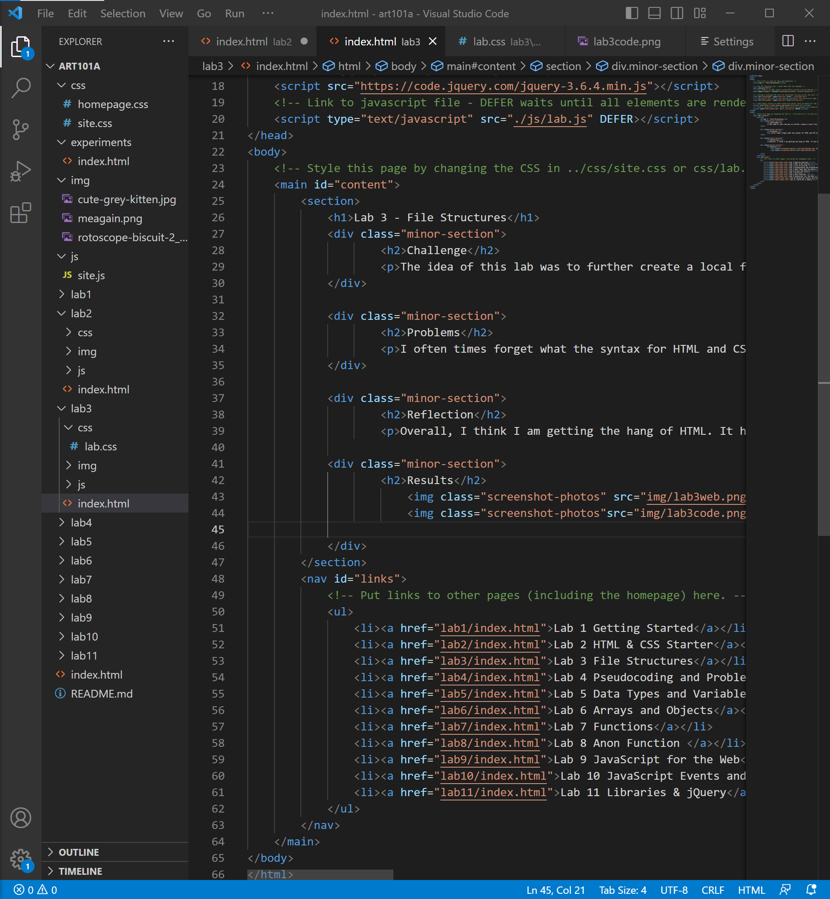

Lab 3 - File Structures
Challenge
The idea of this lab was to further create a local file structure on my computer and add index.html files.
Problems
I often times forget what the syntax for HTML and CSS are, like for getting to close off a tag.
Reflection
Overall, I think I am getting the hang of HTML. It has been a little while since I used it, but its has been coming back to me. Now I want to put more energy into my website layouts and aesthetics so that it looks more cohesive.
Results
Homepage in browser
Homepage source code
Lab 3 page in browser
Lab 3 page source code